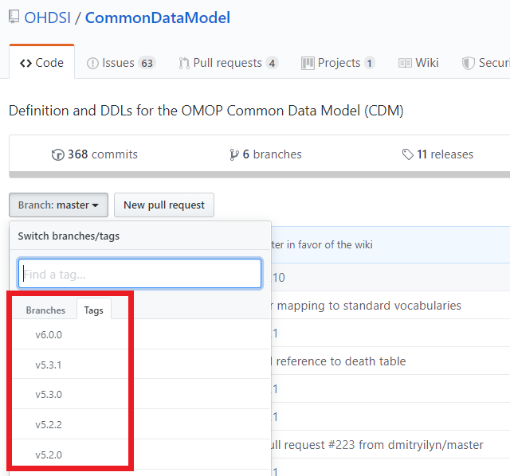
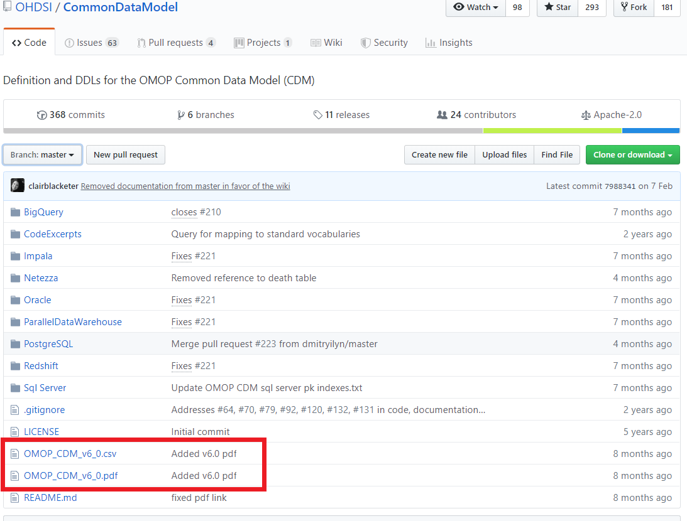

Chapter 3 The OMOP-CDM
- 최신 OMOP-CDM 상세설명서 : CDM wiki page에서 가장 최신의 OMOP-CDM 공식 상세 설명을 보실 수 있습니다.
- OMOP-CDM Github : OMOP-CDM github
- OMOP-CDM 이슈 페이지 : OMOP-CDM 발전에 대한 건의사항은 OMOP-CDM 이슈페이지에 올리면 된다.
- OHDSI tutorial : OHDSI past event에서 영문 OMOP-CDM tutorial을 보실 수 있다.
3.1 설계 원칙
OMOP-CDM은 신뢰성 있는 보건 과학적 증거를 발견하는데 필요한 관찰 의료 데이터의 속성들을 가급적 모두 포함하기 위하여 설계되었다. OMOP-CDM의 설계 원칙은 하기와 같다.
- Suitability for purpose: The CDM aims to provide data organized in a way optimal for analysis, rather than for the purpose of addressing the operational needs of health care providers or payers.
- Data protection: All data that might jeopardize the identity and protection of patients, such as names, precise birthdays etc. are limited. Exceptions are possible where the research expressly requires more detailed information, such as precise birth dates for the study of infants.
- Design of domains: The domains are modeled in a person-centric relational data model, where for each record the identity of the person and a date is captured as a minimum.
- Rationale for domains: Domains are identified and separately defined in an entity-relationship model if they have an analysis use case and the domain has specific attributes that are not otherwise applicable. All other data can be preserved as an observation in an entity-attribute-value structure.
- Standardized Vocabularies: To standardize the content of those records, the CDM relies on the Standardized Vocabularies containing all necessary and appropriate corresponding standard healthcare concepts.
- Reuse of existing vocabularies: If possible, these concepts are leveraged from national or industry standardization or vocabulary definition organizations or initiatives, such as the National Library of Medicine, the Department of Veterans’ Affairs, the Center of Disease Control and Prevention, etc.
- Maintaining source codes: Even though all codes are mapped to the Standardized Vocabularies, the model also stores the original source code to ensure no information is lost.
- Technology neutrality: The CDM does not require a specific technology. It can be realized in any relational database, such as Oracle, SQL Server etc., or as SAS analytical datasets.
- Scalability: The CDM is optimized for data processing and computational analysis to accommodate data sources that vary in size, including databases with up to hundreds of millions of persons and billions of clinical observations.
- Backwards compatibility: All changes from previous CDMs are clearly delineated in the github repository (https://github.com/OHDSI/CommonDataModel). Older versions of the CDM can be easily created from the CDMv5, and no information is lost that was present previously.
3.2 Data Model Conventions
There are a number of implicit and explicit conventions that have been adopted in the CDM. Developers of methods that run against the CDM need to understand these conventions.
3.2.1 General conventions of the model
The OMOP CDM is considered a “person-centric” model, meaning that the people (or patients) drive the event and observation tables. At a minimum, the tables have a foreign key into the PERSON table and a date. This allows for a longitudinal view on all healthcare-relevant events by person. The exceptions from this rule are the standardized health system data tables, which are linked directly to events of the various domains.
3.2.2 General conventions of schemas
New to CDM v6.0 is the concept of schemas. This allows for more separation between read-only and writeable tables. The clinical data, event, and vocabulary tables are in the ‘CDM’ schema and are considered read-only to the end user. This means that the tables can be queried but no information can be accidentally removed or written over except by the database administrator. Tables that need to be manipulated by web-based tools or end users have moved to the ‘Results’ schema. Currently the only two tables in the ‘Results’ schema are COHORT and COHORT_DEFINITON, add a sentence explaining that these tables describe groups of interest that the user might define, put in links to the later sections though likely more will be added over the course of v6.0 point releases. These tables can be written to, meaning that a cohort created in ATLAS or by a user can be stored in the COHORT table and accessed at a later date. This does mean that cohorts in the COHORT table can be manipulated by anyone so it is always recommended that the SQL code used to create the cohort be saved along with the project or analysis in the event it needs to be regenerated.
3.2.3 General conventions of data tables
The CDM is platform-independent. Data types are defined generically using ANSI SQL data types (VARCHAR, INTEGER, FLOAT, DATE, DATETIME, CLOB). Precision is provided only for VARCHAR. It reflects the minimal required string length and can be expanded within a CDM instantiation. The CDM does not prescribe the date and datetime format. Standard queries against CDM may vary for local instantiations and date/datetime configurations.
In most cases, the first field in each table ends in ’_ID’, containing a record identifier that can be used as a foreign key in another table. For example, the CONDITION_OCCURRENCE table contains the field VISIT_OCCURRENCE_ID which is a foreign key to the VISIT_OCCURRENCE table where VISIT_OCCURRENCE_ID is the primary key.
3.2.4 General conventions of fields
Variable names across all tables follow one convention:
| Notation | Description |
|---|---|
| Verbatim information from the source data, typically used in ETL to map to CONCEPT_ID, and not to be used by any standard analytics. For example, CONDITION_SOURCE_VALUE = ‘787.02’ was the ICD-9 code captured as a diagnosis from the administrative claim. | |
| Unique identifiers for key entities, which can serve as foreign keys to establish relationships across entities. For example, PERSON_ID uniquely identifies each individual. VISIT_OCCURRENCE_ID uniquely identifies a PERSON encounter at a point of care. | |
| Foreign key into the Standardized Vocabularies (i.e. the standard_concept attribute for the corresponding term is true), which serves as the primary basis for all standardized analytics. For example, CONDITION_CONCEPT_ID = 31967 (http://athena.ohdsi.org/search-terms/terms/31967) contains the reference value for the SNOMED concept of ‘Nausea’ | |
| Foreign key into the Standardized Vocabularies representing the concept and terminology used in the source data, when applicable. For example, CONDITION_SOURCE_CONCEPT_ID = 45431665 (http://athena.ohdsi.org/search-terms/terms/45431665) denotes the concept of ‘Nausea’ in the Read terminology; the analogous CONDITION_CONCEPT_ID might be 31967, since SNOMED-CT is the Standardized Vocabulary for most clinical diagnoses and findings. | |
| Delineates the origin of the source information, standardized within the Standardized Vocabularies. For example, DRUG_TYPE_CONCEPT_ID can allow analysts to discriminate between ‘Pharmacy dispensing’ and ‘Prescription written’ |
3.2.5 Representation of content through Concepts
In CDM data tables the content of each record is represented using Concepts. Concepts are stored in event tables with their CONCEPT_IDs as foreign keys to the CONCEPT table, which contains Concepts necessary to describe the healthcare experience of a patient. If a Standard Concept does not exist or cannot be identified, the the CONCEPT_ID 0 is used, representing a non-existing concept or un-mappable source value.
Records in the CONCEPT table contain detailed information about each concept (name, domain, class etc.). Concepts, Concept Relationships, Concept Ancestors and other information relating to Concepts is contained in the tables of the Standardized Vocabularies.
3.2.6 Difference between Concept IDs and Source Values
Many tables contain equivalent information in multiple places: As a Source Value, a Source Concept and as a Standard Concept.
- Source Values contain the codes from public code systems such as ICD-9-CM, NDC, CPT-4, READ etc. or locally controlled vocabularies (such as F for female and M for male) copied from the source data. Source Values are stored in the
_SOURCE_VALUE fields in the data tables. - Concepts are CDM-specific entities that represent the meaning of a clinical fact. Most concepts are based on code systems used in healthcare (called Source Concepts), while others were created de-novo (CONCEPT_CODE = ‘OMOP generated’). Concepts have unique IDs across all domains.
- Source Concepts are the concepts that represent the code used in the source. Source Concepts are only used for common healthcare code systems, not for OMOP-generated Concepts. Source Concepts are stored in the
_SOURCE_CONCEPT_ID field in the data tables. - Standard Concepts are those concepts that are used to define the unique meaning of a clinical entity. For each entity there is one Standard Concept. Standard Concepts are typically drawn from existing public vocabulary sources. Concepts that have the equivalent meaning to a Standard Concept are mapped to the Standard Concept. Standard Concepts are referred to in the
_CONCEPT_ID field of the data tables.
Source Values are only provided for convenience and quality assurance (QA) purposes. Source Values and Source Concepts are optional, while Standard Concepts are mandatory. Source Values may contain information that is only meaningful in the context of a specific data source. This mandatory use of Standard Concepts is what allows all OHDSI collaborators to speak the same language. For example, let’s look at the condition ‘Pulmonary Tuberculosis’ (TB). Figure 3.1 shows that the ICD9CM code for TB is 011.

Figure 3.1: ICD9CM code for Pulmonary Tuberculosis
Without the use of a standard way to represent TB the code 011 could be interpreted as ‘Hospital Inpatient (Including Medicare Part A)’ in the UB04 vocabulary, or as ‘Nervous System Neoplasms without Complications, Comorbidities’ in the DRG vocabulary. This is where Concept IDs, both Source and Standard, are valuable. The Concept ID that represents the 011 ICD9CM code is 44828631 (http://athena.ohdsi.org/search-terms/terms/44828631). This differentiates the ICD9CM from the UBO4 and from the DRG. The Standard Concept that ICD9CM code maps to is 253954 (http://athena.ohdsi.org/search-terms/terms/253954) as shown in figure 3.2 by the relationship ‘Non-standard to Standard map (OMOP)’. This same mapping relationship exists between Read, ICD10, CIEL, and MeSH codes, among others, so that any research that references the standard SNOMED concept is sure to include all supported source codes.

Figure 3.2: SNOMED code for Pulmonary Tuberculosis
An example of how this relationship is depicted in the tables is shown in figure (link to figure in CONDITION_OCCURRENCE)
3.3 OMOP CDM Standardized Tables
The OMOP CDM contains 16 Clinical data tables, 10 Vocabulary tables, 2 Metadata tables, 4 Health System data tables, 2 Health Economics data tables, 3 standardized derived elements, and 2 results schema tables. To illustrate how these tables are utilized in practice the data of one person will be used as a common thread throughout the rest of the chapter. While part of the CDM the Vocabulary tables are not covered here, rather, they are detailed in depth in Chapter ??.
3.3.1 OMOP-CDM 의 상세 설명 (table specification)
OMOP-CDM은 OHDSI Common Data Model 깃헙에서 관리되고 있다. 2019년 5월 25일 현재 기준으로 모델 버전은 6.0이다. 모델이 자주 업데이트 되므로 최신 버전에 대해서는 깃헙 의 wiki page 에서 확인하는 것이 좋다. 이전 버전의 OMOP-CDM specification이 필요할 경우 깃헙의 Tags에서 원하는 버전으로 이동한 후 pdf 파일을 열어 보면 된다.

3.3.2 OMOP-CDM 건의 사항 및 업그레이드
Open community로 운영되는 OHDSI에서 OMOP-CDM 의 진화 역시 사용자에 의해서 결정된다. 만약, OMOP-CDM의 데이터 아키텍처에 대해 건의사항이 있을 경우 CDM 깃헙에 의견을 자유롭게 적을 수 있다. OMOP-CDM 운영자들은 이를 확인하고 다른 사람들과 의논, 필요시 투표하여 차후의 버전에 필요사항을 반영할 것이다.
OMOP-CDM 구조는 진화 중이며, 2019년 5월 30일 기준 최신 버전은 v6.0 이다.
Figure 3.3: Evolution of OMOP-CDM
3.3.3 Running Example: Endometriosis
Endometriosis is a painful condition whereby cells normally found in the lining of a woman’s uterus occur elsewhere in the body. Severe cases can lead to infertility, bowel, and bladder problems. The following sections will detail one patient’s experience with this disease and how her clinical experience might be represented in the Common Data Model.


Figure 3.4: Read more about Lauren and endometriosis at https://www.endometriosis-uk.org/laurens-story
3.3.4 PERSON table
As the Common Data Model is a person-centric model (see section 3.2.1) let’s start with how she would be represented in the PERSON table. For the full PERSON table specification please see the CDM wiki https://github.com/OHDSI/CommonDataModel/wiki/PERSON.
What do we know about Lauren?
- She is a 36-year-old woman
- Her birthday is 12-March-1982
- She is white
- She is english
With that in mind, her PERSON table might look something like this:
| Column Name | Value | Explanation |
|---|---|---|
| person_id | 1 | Person_id should be an integer, either directly from the source or generated as part of the build process. |
| gender_concept_id | 8532 | The concept_id referring to female gender is 8532 (http://athena.ohdsi.org/search-terms/terms/8532). |
| year_of_birth | 1982 | |
| month_of_birth | 3 | |
| day_of_birth | 12 | |
| birth_datetime | 1982-03-12 00:00:00 | When the time is not known midnight is used. |
| death_datetime | ||
| race_concept_id | 8527 | The concept_id referring to white race is 8527 (http://athena.ohdsi.org/search-terms/terms/8527). |
| ethnicity_concept_id | 38003564 | Typically hispanic status is stored for ethnicity. The concept_id 38003564 (http://athena.ohdsi.org/search-terms/terms/38003564) refers to ‘Not hispanic’. |
| location_id | Her address is not known. | |
| provider_id | Her primary care provider is not known. | |
| care_site_id | Her primary care site is not known. | |
| person_source_value | 1 | Typically this would be her identifier in the source data, though often is it the same as the person_id. |
| gender_source_value | F | The gender value as it appears in the source is stored here. |
| gender_source_concept_id | 0 | If the gender value in the source was coded using a vocabulary recognized by OHDSI, that concept_id would go here. For example, if her gender was ‘Sex-F’ in the source and it was stated to be in the PCORNet vocabulary concept_id 44814665 (http://athena.ohdsi.org/search-terms/terms/44814665) would go in this field. |
| race_source_value | white | The race value as it appears in the source is stored here. |
| race_source_concept_id | 0 | Same principle as gender_source_concept_id. |
| ethnicity_source_value | english | The ethnicity value as it appears in the source is stored here. |
| ethnicity_source_concept_id | 0 | Same principle as gender_source_concept_id. |
3.3.5 OBSERVATION_PERIOD table
The OBSERVATION_PERIOD table is designed to define the amount of time for which a patient’s clinical events are recorded in the source system. For US healthcare insurance claims this is typically the enrollment period of the patient. When working with data from electronic health records (EHR) often the first record in the system is considered the observation_period_start_date and the latest record is considered the observation_period_end_date with the understanding that only the clinical events that happened within that particular system were recorded. For the full OBSERVATION_PERIOD table specification please see the CDM wiki (https://github.com/OHDSI/CommonDataModel/wiki/OBSERVATION_PERIOD).
How can we determine Lauren’s observation period?
Lauren’s information is most similar to EHR data in that we only have records of her encounters from which to determine her observation period.
| Encounter_ID | Start_Date | Stop_Date | EncounterClass |
|---|---|---|---|
| 70 | 2010-01-06 | 2010-01-06 | outpatient |
| 80 | 2011-01-06 | 2011-01-06 | outpatient |
| 90 | 2012-01-06 | 2012-01-06 | outpatient |
| 100 | 2013-01-07 | 2013-01-07 | outpatient |
| 101 | 2013-01-14 | 2013-01-14 | ambulatory |
| 102 | 2013-01-17 | 2013-01-24 | inpatient |
Based on the encounter records her OBSERVATION_PERIOD table might look something like this:
| Column Name | Value | Explanation |
|---|---|---|
| observation_period_id | 1 | This is typically an autogenerated field that creates a unique id number for each record in the table. |
| person_id | 1 | This comes from the PERSON table and links PERSON and OBSERVATION_PERIOD. |
| observation_period_start_date | 2010-01-06 | This is the start date of her earliest encounter on record. |
| observation_period_end_date | 2013-01-24 | This is the end date of her latest encounter on record. |
| period_type_concept_id | 44814725 | The best option in the Vocabulary with the concept class ‘Obs Period Type’ is 44814724 (http://athena.ohdsi.org/search-terms/terms/44814724), which stands for ‘Period covering healthcare encounters’. |
3.3.6 VISIT_OCCURRENCE
The VISIT_OCCURRENCE table houses information about a patient’s encounters with the health care system. Within the OHDSI vernacular these are referred to as visits and are considered to be discreet events. There are 12 categories of visits though the most common are inpatient, outpatient, emergency and long term care. For the full VISIT_OCCURRENCE table specification please see the CDM wiki (https://github.com/OHDSI/CommonDataModel/wiki/VISIT_OCCURRENCE).
How do we represent Lauren’s encounters as visits?
Revisting the encounters we used to determine her observation period:
| Encounter_ID | Start_Date | Stop_Date | EncounterClass |
|---|---|---|---|
| 70 | 2010-01-06 | 2010-01-06 | outpatient |
| 80 | 2011-01-06 | 2011-01-06 | outpatient |
| 90 | 2012-01-06 | 2012-01-06 | outpatient |
| 100 | 2013-01-07 | 2013-01-07 | outpatient |
| 101 | 2013-01-14 | 2013-01-14 | ambulatory |
| 102 | 2013-01-17 | 2013-01-24 | inpatient |
As an example let’s represent the inpatient encounter as a record in the VISIT_OCCURRENCE table.
| Column Name | Value | Explanation |
|---|---|---|
| visit_occurrence_id | 514 | This is typically an autogenerated field that creates a unique id number for each visit on the person’s record in the converted CDM database. |
| person_id | 1 | This comes from the PERSON table and links PERSON and VISIT_OCCURRENCE. |
| visit_concept_id | 9201 | The concept_id referring to an inpatient visit is 9201 (http://athena.ohdsi.org/search-terms/terms/9201). |
| visit_start_date | 2013-01-17 | The start date of the visit. |
| visit_start_datetime | 2013-01-17 00:00:00 | The date and time of the visit started. When time is unknown midnight is used. |
| visit_end_date | 2013-01-24 | The end date of the visit. If this is a one-day visit the end date should match the start date. |
| visit_end_datetime | 2013-01-24 00:00:00 | The date and time of the visit end. If time is unknown midnight is used. |
| visit_type_concept_id | 32034 | This column is intended to provide information about the provenance of the visit record, i.e. does it come from an insurance claim, hospital billing record, EHR record, etc. For this example the concept_id 32035 (http://athena.ohdsi.org/search-terms/terms/32035) is used as the encounters are similar to electronic health records |
| provider_id* | NULL | If the encounter record has a provider associated, the id for that provider goes in this field. This should be the provider_id from the PROVIDER table that represents the provider on the encounter. |
| care_site_id | NULL | If the encounter record has a care site associated, the id for that care site goes in this field. This should be the care_site_id from the CARE_SITE table that codes for the care site on the encounter. |
| visit_source_value | inpatient | The visit value as it appears in the source goes here. In this context ‘visit’ means outpatient, inpatient, emergency, etc. |
| visit_source_concept_id | 0 | If the visit value from the source is coded using a vocabulary that is recognized by OHDSI, the concept_id that represents the visit source value would go here. |
| admitted_from_concept_id | 0 | If known, this is the concept_id that represents where the patient was admitted from. This concept should have the concept class ‘Place of Service’ and the domain ‘Visit’. For example, if a patient was admitted to the hospital from home, the concept_id would be 8536 (http://athena.ohdsi.org/search-terms/terms/8536). |
| admitted_from_source_value | NULL | This is the value from the source that represents where the patient was admitted from. Using the above example, this would be ‘home’. |
| discharge_to_concept_id | 0 | If known, this is the concept_id that represents where the patient was discharged to. This concept should have the concept class ‘Place of Service’ and the domain ‘Visit’. For example, if a patient was released to an assisted living facility, the concept_id would be 8615 (http://athena.ohdsi.org/search-terms/terms/8615). |
| discharge_to_source_value | 0 | This is the value from the source that represents where the patient was discharged to. Using the above example, this would be ‘assisted living facility’. |
| preceding_visit_occurrence_id | NULL | The visit_occurrence_id for the visit immediately preceding the current one in time for the patient. |
*A patient may interact with multiple health care providers during one visit, as is often the case with inpatient stays. These interactions can be recorded in the VISIT_DETAIL table. While not covered in depth in this chapter, you can read more about the VISIT_DETAIL table on the CDM wiki (https://github.com/OHDSI/CommonDataModel/wiki/VISIT_DETAIL)
3.3.7 CONDITION_OCCURRENCE
Records in the CONDITION_OCCURRENCE table are diagnoses, signs, or symptoms of a condition either observed by a Provider or reported by the patient.
What are Lauren’s conditions?
Revisiting her account she says “About 3 years ago I noticed my periods, which had also been painful, were getting increasingly more painful. I started becoming aware of a sharp jabbing pain right by my colon and feeling tender and bloated around my tailbone and lower pelvis area. My periods had become so painful that I was missing 1-2 days of work a month. Painkillers sometimes dulled the pain, but usually they didn’t do much.”
The SNOMED code for painful menstruation cramps, otherwise known as dysmenorrhea, is 266599000. Let’s see how that would be represented in the CONDITION_OCCURRENCE table:
| Column | Value | Explanation |
|---|---|---|
| condition_occurrence_id | 964 | This is typically an autogenerated field that creates a unique id number for each condition on the person’s record in the converted CDM database. |
| person_id | 1 | This comes from the PERSON table and links PERSON and CONDITION_OCCURRENCE. |
| condition_concept_id | 194696 | The concept_id that represents the SNOMED code 266599000 is 194696 (http://athena.ohdsi.org/search-terms/terms/194696) |
| condition_start_date | 2010-01-06 | The date when the instance of the Condition is recorded. |
| condition_start_datetime | 2010-01-06 00:00:00 | The date and time when the instance of the Condition is recorded. Midnight is used when the time is unknown |
| condition_end_date | NULL | If known, this is the date when the instance of the Condition is considered to have ended. |
| condition_end_datetime | NULL | If known, this is the date and time when the instance of the Condition is considered to have ended. |
| condition_type_concept_id | 32020 | This column is intended to provide information about the provenance of the condition, i.e. does it come from an insurance claim, hospital billing record, EHR record, etc. For this example the concept_id 32020 (http://athena.ohdsi.org/search-terms/terms/32020) is used as the encounters are similar to electronic health records. Concept_ids in this field should be in the ‘Condition Type’ vocabulary. |
| condition_status_concept_id | 0 | If known, the condition_status_concept_id represents when and/or how the condition was diagnosed. For example, a condition could be an admitting diagnosis, in which case the concept_id 4203942 (http://athena.ohdsi.org/search-terms/terms/4203942) would be used. |
| stop_reason | NULL | If known, the reason that the Condition was no longer present, as indicated in the source data. |
| provider_id | NULL | If the condition record has a diagnosing provider listed, the id for that provider goes in this field. This should be the provider_id from the PROVIDER table that represents the provider on the encounter. |
| visit_occurrence_id | 509 | If known, this is the visit (represented as visit_occurrence_id taken from the VISIT_OCCURRENCE table) during which the condition was diagnosed. |
| visit_detail_id | NULL | If known, this is the visit detail encounter (represented as visit_detail_id from the VISIT_DETAIL table) during which the condition was diagnosed. |
| condition_source_value | 266599000 | This is the value from the source that represents the condition. In Lauren’s case of dysmenorrhea the SNOMED code for that condition is stored here and the standard concept_id mapped from that code is stored in CONDITION_CONCEPT_ID. |
| condition_source_concept_id | 194696 | If the condition value from the source is coded using a vocabulary that is recognized by OHDSI, the concept_id that represents that value would go here. In the example of dysmennorhea the source value is a SNOMED code so the concept_id that represents that code is 194696. In this case it is the same as the condition_concept_id since the SNOMED vocabulary is the standard condition vocabulary |
| condition_status_source_value | 0 | If the condition status value from the source is coded using a vocabulary that is recognized by OHDSI, the concept_id that represents that source value would go here. |
3.3.8 DRUG_EXPOSURE
The DRUG_EXPOSURE captures records about the utilization of a Drug when ingested or otherwise introduced into the body. Drugs include prescription and over-the-counter medicines, vaccines, and large-molecule biologic therapies. Radiological devices ingested or applied locally do not count as Drugs.
Drug Exposure is inferred from clinical events associated with orders, prescriptions written, pharmacy dispensings, procedural administrations, and other patient-reported information.
What are Lauren’s drug exposures?
We know that Lauren was given 60 acetaminophen 325mg oral tablets for 30 days (NDC code 69842087651) at her visit on 2010-01-06 to help with her dysmenorrhea pain. Here’s how that might look in the DRUG_EXPOSURE table:
| Column | Value | Explanation |
|---|---|---|
| drug_exposure_id | 1001 | This is typically an autogenerated field that creates a unique id number for each drug_exposure on the person’s record in the converted CDM database. |
| person_id | 1 | This comes from the PERSON table and links PERSON and DRUG_EXPOSURE. |
| drug_concept_id | 1127433 | The NDC code for acetaminophen maps to the RxNorm code 313782 which is represented by the concept_id 1127433 (http://athena.ohdsi.org/search-terms/terms/1127433). |
| drug_exposure_start_date | 2010-01-06 | The start date of the drug exposure |
| drug_exposure_start_datetime | 2010-01-06 00:00:00 | The start date and time of the drug exposure. Midnight is used when the time is not known. |
| drug_exposure_end_date | 2010-02-05 | The end date of the drug exposure. Depending on different sources, it could be a known or an inferred date and denotes the last day at which the patient was still exposed to the drug. In this case the end is inferred since we know Lauren had a 30 days supply. |
| drug_exposure_end_datetime | 2010-02-05 00:00:00 | The end date and time of the drug exposure. Similar rules apply as to drug_exposure_end_date. Midnight is used when time is unknown |
| verbatim_end_date | NULL | If the source provides an end date rather than just days supply that date goes here. |
| drug_type_concept_id | 38000177 | This column is intended to provide information about the provenance of the drug, i.e. does it come from an insurance claim, prescription record, etc. For this example the concept_id 38000177 (http://athena.ohdsi.org/search-terms/terms/38000177) is used as the drug record is from a written prescription. Concept_ids in this field should be in the ‘Drug Type’ vocabulary. |
| stop_reason | NULL | The reason the Drug was stopped. Reasons include regimen completed, changed, removed, etc. |
| refills | NULL | The number of refills after the initial prescription. The initial prescription is not counted, values start with null. In the case of Lauren’s acetaminophen she did not have any refills so the value is NULL. |
| quantity | 60 | The quantity of drug as recorded in the original prescription or dispensing record. |
| days_supply | 30 | The number of days of supply of the medication as prescribed. |
| sig | NULL | The directions (‘signetur’) on the Drug prescription as recorded in the original prescription (and printed on the container) or dispensing record. |
| route_concept_id | 4132161 | This concept is meant to represent the route of the drug the patient was was exposed to. Lauren took her acetaminophen orally so the concept_id 4132161 (http://athena.ohdsi.org/search-terms/terms/4132161) is used. |
| lot_number | NULL | An identifier assigned to a particular quantity or lot of Drug product from the manufacturer. |
| provider_id | NULL | If the drug record has a prescribing provider listed, the id for that provider goes in this field. This should be the provider_id from the PROVIDER table that represents the provider on the encounter. |
| visit_occurrence_id | 509 | If known, this is the visit (represented as visit_occurrence_id taken from the VISIT_OCCURRENCE table) during which the drug was prescribed. |
| visit_detail_id | NULL | If known, this is the visit detail (represented as visit_detail_id taken from the VISIT_DETAIL table) during which the drug was prescribed. |
| drug_source_value | 69842087651 | This is the source code for the Drug as it appears in the source data. In Lauren’s case she was prescribed acetaminophen and the NDC code is stored here. |
| drug_source_concept_id | 750264 | This is the concept_id that represents the drug source value. In this example the concept_id is 750264 (http://athena.ohdsi.org/search-terms/terms/750264). |
| route_source_value | NULL | The information about the route of administration as detailed in the source. |
| dose_unit_source_value | NULL | The information about the dose unit as detailed in the source. |
3.3.9 PROCEDURE_OCCURRENCE
The PROCEDURE_OCCURRENCE table contains records of activities or processes ordered by, or carried out by, a healthcare provider on the patient to have a diagnostic or therapeutic purpose. Procedures are present in various data sources in different forms with varying levels of standardization. For example:
- Medical Claims include procedure codes that are submitted as part of a claim for health services rendered, including procedures performed.
- Electronic Health Records that capture procedures as orders.
What procedures did Lauren have? From her description we know she had a ultrasound of her left ovary on 2013-01-14 that showed a 4x5cm cyst. Here’s how that would look in the PROCEDURE_OCCURRENCE table:
| Column | Value | Explanation |
|---|---|---|
| procedure_occurrence_id | 1277 | This is typically an autogenerated field that creates a unique id number for each procedure_occurrence on the person’s record in the converted CDM database. |
| person_id | 1 | This comes from the PERSON table and links PERSON and PROCEDURE_OCCURRENCE |
| procedure_concept_id | 4127451 | The SNOMED procedure code for a pelvic ultrasound is 304435002 which is represented by the concept_id 4127451 (http://athena.ohdsi.org/search-terms/terms/4127451). |
| procedure_date | 2013-01-14 | The date on which the procedure was performed. |
| procedure_datetime | 2013-01-14 00:00:00 | The date and time on which the procedure was performed. Midnight is used when time is unknown. |
| procedure_type_concept_id | 38000275 | This column is intended to provide information about the provenance of the procedure, i.e. does it come from an insurance claim, EHR order, etc. For this example the concept_id 38000275 (http://athena.ohdsi.org/search-terms/terms/38000275) is used as the procedure record is from an EHR record. Concept_ids in this field should be in the ‘Procedure Type’ vocabulary. |
| modifier_concept_id | 0 | This is meant for a concept_id representing the modifier on the procedure. For example, if the record indicated that a CPT4 procedure was performed bilaterally then the concept_id 42739579 (http://athena.ohdsi.org/search-terms/terms/42739579) would be used. |
| quantity | 0 | The quantity of procedures ordered or administered. |
| provider_id | NULL | If the procedure record has a provider listed, the id for that provider goes in this field. This should be the provider_id from the PROVIDER table that represents the provider on the encounter. |
| visit_occurrence_id | 740 | If known, this is the visit (represented as visit_occurrence_id taken from the VISIT_OCCURRENCE table) during which the procedure was performed. |
| visit_detail_id | NULL | If known, this is the visit detail (represented as visit_detail_id taken from the VISIT_DETAIL table) during which the procedure was performed. |
| procedure_source_value | 304435002 | The source code for the Procedure as it appears in the source data. This code is mapped to a standard procedure Concept in the Standardized Vocabularies and the original code is, stored here for reference. |
| procedure_source_concept_id | 4127451 | This is the concept_id that represents the procedure source value. |
| modifier_source_value | NULL | The source code for the modifier as it appears in the source data. |